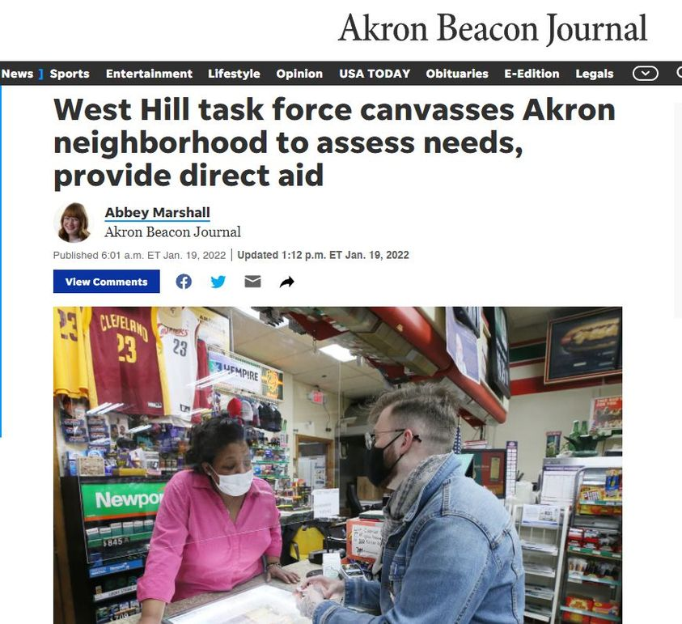

Timeline photos
And yet again... here is another system that is utterly failing. So the people then have to follow behind and mop up the damage.
BUS PASSES SHOULD BE FREE TO PEOPLE ON FOOD STAMPS. Those buses are always empty.
But no. This guy, @[100001754082071:2048:Fran Wilson] has to DO THE RIGHT THING and buy bus passes and then hand them out to people that desperately need them so that the bus company can get paid.